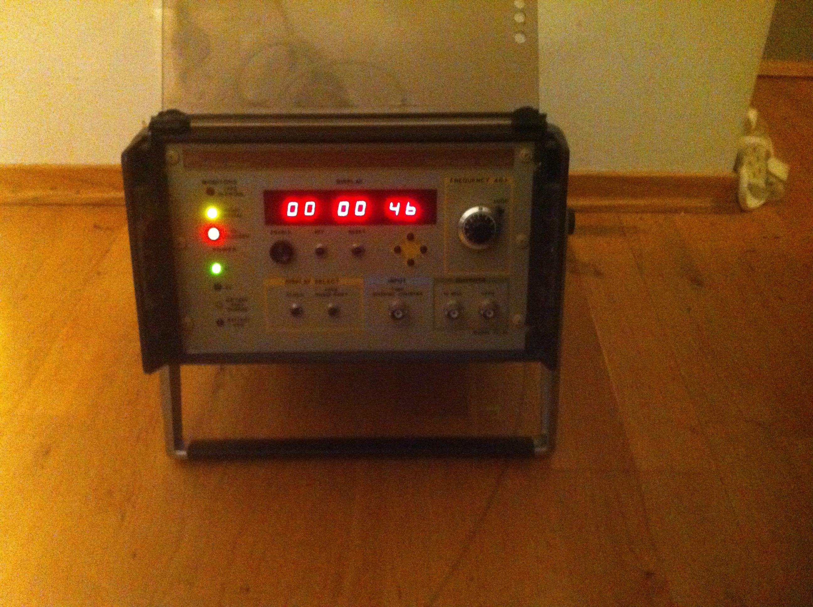
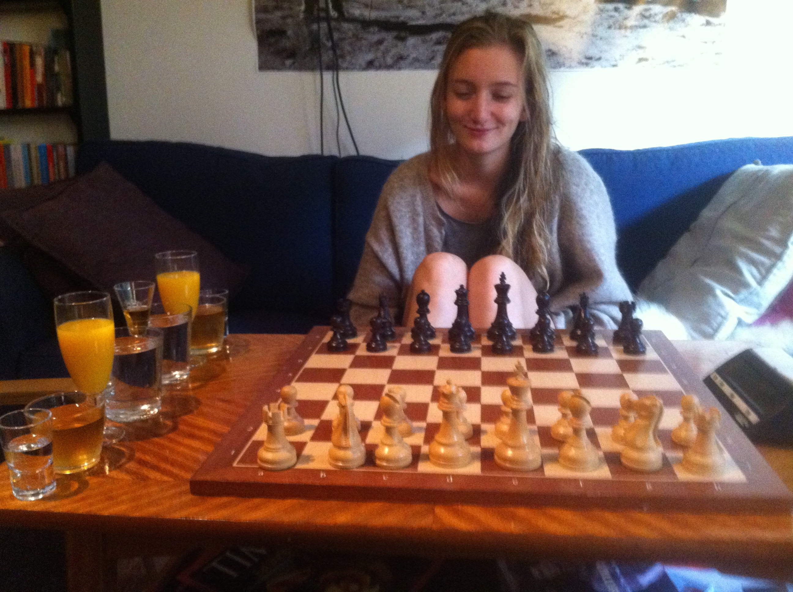
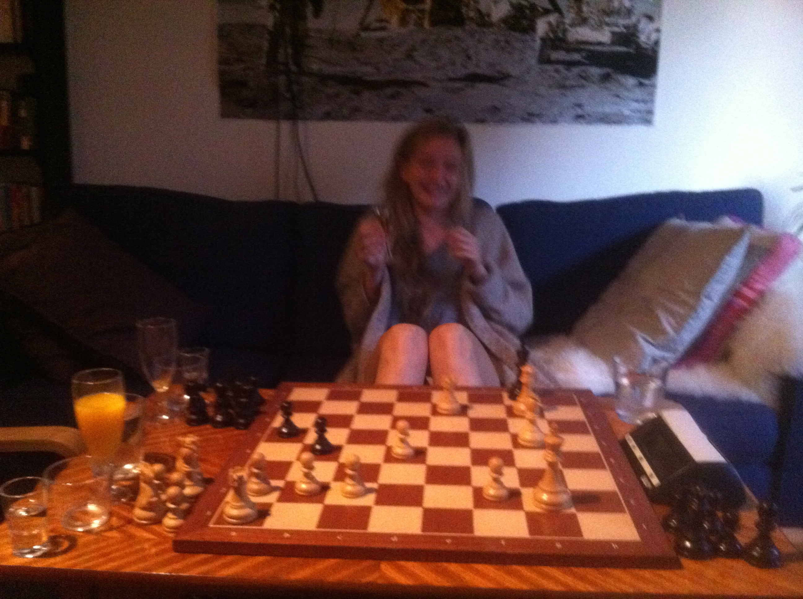

An Essay by Benjamin Franklin
It's about chess morals
A Dylan song
My Back Pages
Atomic clock
A friend of mine has this great atomic clock. It uses Rubidium to count seconds.
 1 sec. off after 300000y.
On the Hunt
Drinking Chess!
Alt klart!
You will need
- 2 x tiny glasses
- 2 x small glasses
- 2 x medium glasses
- 2 x large glasses
- 1 x special glass
- some booze
Pour glasses, assign pieces to drinks and down one when your piece is taken. Play to win!
